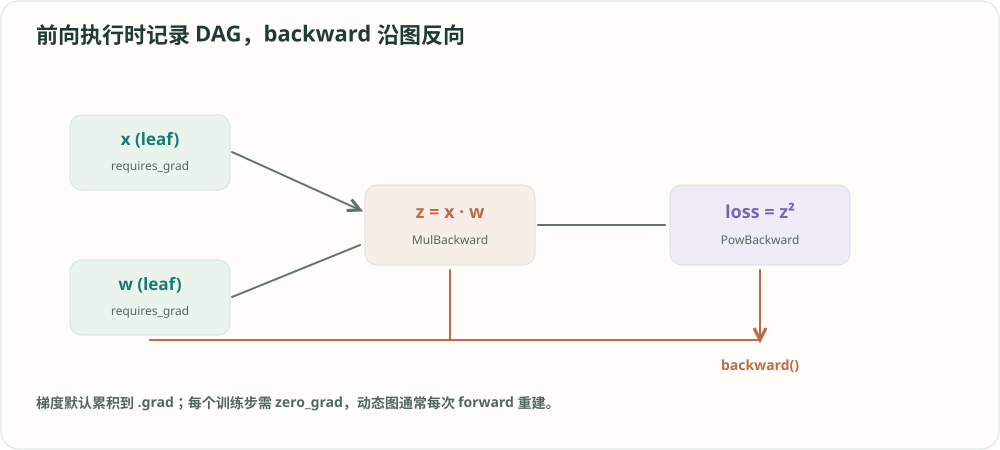
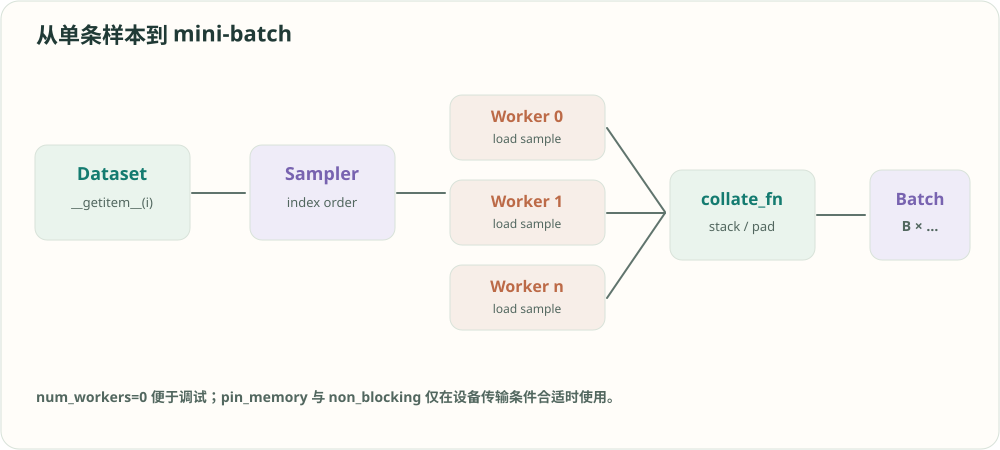
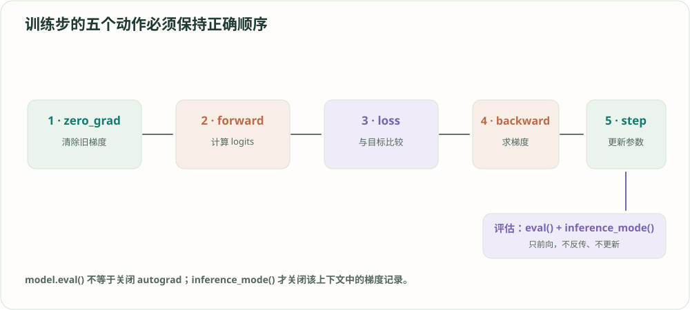
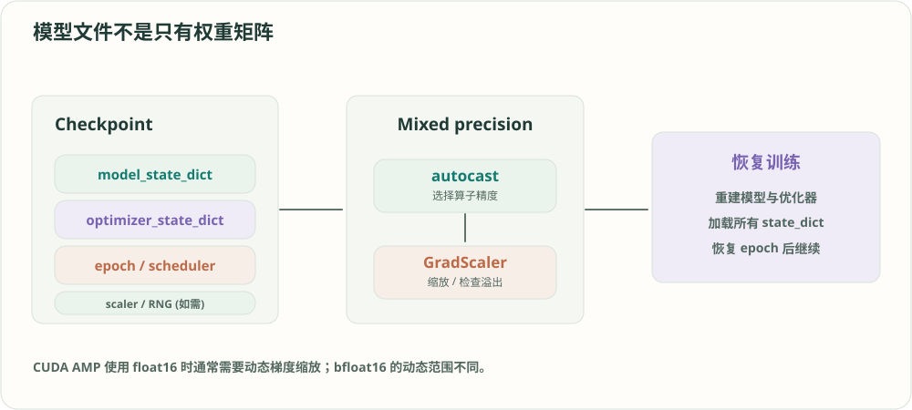

PyTorch 实战：Tensor、Autograd、DataLoader 与训练循环
从张量设备与形状出发，理解 PyTorch 如何在前向执行时构建计算图，并通过 Dataset、DataLoader、nn.Module 和优化器组成训练流程。再把评估模式、断点续训与自动混合精度纳入可靠的工程实践。
01 · PyTorch 的基本对象：Tensor 与设备
PyTorch Tensor 是带有形状、数据类型、设备和布局的多维数组。shape 描述维度，dtype 决定数值精度，device 指明 CPU 或可用加速器。一次模型计算通常把输入、参数和目标放到兼容设备上；CPU/GPU 间的数据移动会产生实际成本，不能把 .to(device) 当作免费的视图操作。
训练表格模型时常见形状是 X: [B, D]、二分类 logits [B, 1]、标签 [B, 1]；多分类 logits 通常是 [B, C]，标签是整数类别索引 [B]。明确 batch 维度可以避免对最后一个 batch 使用无参数 squeeze() 后把维度意外删掉。
02 · Autograd：前向时记录，反向时应用链式法则
当梯度模式开启且至少一个输入需要梯度时，PyTorch 会在前向运算中记录操作依赖，形成动态有向无环图。调用标量损失的 backward() 后，Autograd 沿图反向执行链式法则，将梯度累积到需要梯度的叶子张量的 .grad。图通常在一次反向后释放；若确有多次反向需求，才考虑 retain_graph 等机制。

梯度默认是累积而不是自动覆盖，所以每个训练步需要清除上一批次的梯度。detach() 将张量从当前计算图分离；torch.no_grad() 与 torch.inference_mode() 可在评估或推理时关闭梯度记录，但二者与 model.eval() 是不同机制。
import torch
x = torch.tensor(2.0, requires_grad=True)
w = torch.tensor(3.0, requires_grad=True)
loss = (x * w + 1) ** 2
loss.backward()
print("loss:", float(loss))
print("dloss/dx:", float(x.grad))
print("dloss/dw:", float(w.grad))
# loss = (2*3+1)^2 = 49
# dloss/dx = 2*(x*w+1)*w = 42
# dloss/dw = 2*(x*w+1)*x = 28
assert torch.allclose(x.grad, torch.tensor(42.0))
assert torch.allclose(w.grad, torch.tensor(28.0))03 · Dataset 与 DataLoader：样本读取和批次组装
Dataset 定义如何读取单个样本或迭代数据；map-style Dataset 通常实现 __len__ 与 __getitem__，IterableDataset 则通过迭代器产生样本。DataLoader 负责样本索引顺序、批次组装、可选多进程读取和内存 pinning。

训练集常设置 shuffle=True，验证/测试集通常保持稳定顺序；若显式指定 sampler，就不能同时用 shuffle=True。num_workers=0 便于调试；增加 worker 可能提高吞吐，但也增加进程、内存与启动成本。pin_memory=True 与 non_blocking=True 在合适的加速器传输场景中有帮助，不是任何设备上都自动更快。drop_last=True 会丢弃最后一个不完整 batch，可能影响小数据集或 BatchNorm。
04 · nn.Module：把参数注册到一个可移动、可保存的模型
自定义模型通常继承 torch.nn.Module，在 __init__ 中创建子模块，在 forward 中描述计算。注册的参数会被 model.parameters() 发现，并被 state_dict() 保存；BatchNorm 的 running mean/variance 等 buffer 也会进入 state_dict，但它们不是需要优化器更新的参数。
nn.Sequential 适合简单的顺序网络；有分支、残差或条件控制时，显式定义 forward 更清楚。二分类常输出 logits 并使用 BCEWithLogitsLoss；多分类通常输出 logits 并使用 CrossEntropyLoss。不要在这些损失前重复执行 sigmoid 或 softmax。
05 · 训练循环：清梯度、前向、损失、反向、更新
每个 mini-batch 的核心顺序是：切换训练模式、清除旧梯度、前向计算、计算损失、反向传播、优化器更新。训练损失若按 batch 平均值输出，汇总 epoch 平均时应乘以 batch 样本数再除以样本总数，避免最后一个较小 batch 被赋予与完整 batch 相同权重。

常用 optimizer.zero_grad(set_to_none=True) 清除梯度；loss.backward() 计算梯度；optimizer.step() 更新参数。梯度累积、梯度裁剪或多优化器训练会改变具体顺序，必须按算法设计说明，而不是复制一段固定模板。
06 · 评估模式不是关闭梯度的同义词
model.train() 与 model.eval() 会切换影响 Dropout、BatchNorm 等模块的行为；它们不会自动打开或关闭 Autograd。评估时通常同时调用 model.eval() 与 torch.inference_mode()，前者控制模块行为，后者关闭该上下文中的梯度跟踪并减少额外开销。
评估集不应参与梯度更新、超参数选择之外的重复试错或早停决策；早停应使用验证集，最终测试集只用于最后的独立报告。若损失函数要求 logits，计算指标时才对 logits 进行 sigmoid/softmax 或 argmax；不同任务需要不同的聚合与阈值。
07 · Checkpoint：恢复训练要保存的不只是模型权重
模型 state_dict 保存参数与 buffer；优化器 state_dict 还包含动量、二阶矩等优化状态。若使用学习率调度器或 GradScaler，也要保存它们的状态。断点续训还应记录 epoch/global step、最佳验证指标、数据与代码版本、随机数状态及 sampler 状态；否则虽然模型能加载，却不一定能重现原来的训练轨迹。

加载不可信来源的序列化文件存在安全风险。对于仅包含张量与受支持基本类型的 checkpoint，应使用当前 PyTorch 文档支持的安全加载选项（例如显式 weights_only=True），并只加载可信模型工件。部署推理一般切换到 eval()，训练恢复则恢复优化器、调度器和训练模式。
08 · 自动混合精度：让精度与硬件执行相匹配
自动混合精度（AMP）在合适算子上使用较低精度以提高吞吐、降低显存占用，同时让某些数值敏感算子保留较高精度。CUDA float16 训练通常组合 torch.autocast 与 torch.amp.GradScaler：前向与损失计算在 autocast 区域执行，反向在 autocast 外执行；GradScaler 动态缩放损失，避免小梯度在 float16 范围内下溢。
GradScaler 不保证数值永远稳定；若出现 NaN/Inf，需要检查模型、损失和输入。bfloat16 的指数范围更宽，常见场景不需要与 float16 相同的梯度缩放策略；CPU bfloat16 与不同 GPU/加速器也有各自支持情况。若要裁剪梯度，应先执行 scaler.unscale_(optimizer)，再裁剪，之后调用 scaler.step 与 scaler.update。
09 · 可运行实验：用 DataLoader 与 Autograd 训练小型 MLP
下面使用合成二分类表格数据演示完整 CPU/GPU 训练路径。标准化器只在训练集拟合；模型输出形状与目标保持为 [B,1]；CUDA 可用时启用 float16 autocast 与 GradScaler，否则使用普通 float32 路径。
import numpy as np
import torch
from torch import nn
from torch.utils.data import TensorDataset, DataLoader
from sklearn.datasets import make_classification
from sklearn.model_selection import train_test_split
from sklearn.preprocessing import StandardScaler
torch.manual_seed(20)
np.random.seed(20)
torch.set_num_threads(1)
X, y = make_classification(
n_samples=640, n_features=10, n_informative=6,
n_redundant=2, class_sep=1.0, random_state=20)
X_train, X_test, y_train, y_test = train_test_split(
X, y, test_size=0.2, stratify=y, random_state=20)
scaler = StandardScaler().fit(X_train)
X_train = scaler.transform(X_train).astype(np.float32)
X_test = scaler.transform(X_test).astype(np.float32)
train_ds = TensorDataset(
torch.from_numpy(X_train),
torch.from_numpy(y_train.astype(np.float32)).reshape(-1, 1))
test_ds = TensorDataset(
torch.from_numpy(X_test),
torch.from_numpy(y_test.astype(np.float32)).reshape(-1, 1))
train_loader = DataLoader(train_ds, batch_size=64, shuffle=True, num_workers=0)
test_loader = DataLoader(test_ds, batch_size=128, shuffle=False, num_workers=0)
model = nn.Sequential(
nn.Linear(10, 32), nn.BatchNorm1d(32), nn.ReLU(),
nn.Dropout(0.15), nn.Linear(32, 1)
)
device = torch.device("cuda" if torch.cuda.is_available() else "cpu")
model.to(device)
optimizer = torch.optim.AdamW(model.parameters(), lr=1e-3)
criterion = nn.BCEWithLogitsLoss()
use_amp = device.type == "cuda"
grad_scaler = torch.amp.GradScaler("cuda", enabled=use_amp)
for epoch in range(4):
model.train()
total_loss, seen = 0.0, 0
for xb, yb in train_loader:
xb, yb = xb.to(device), yb.to(device)
optimizer.zero_grad(set_to_none=True)
if use_amp:
with torch.autocast(device_type="cuda", dtype=torch.float16):
logits = model(xb)
loss = criterion(logits, yb)
else:
logits = model(xb)
loss = criterion(logits, yb)
grad_scaler.scale(loss).backward()
grad_scaler.step(optimizer)
grad_scaler.update()
total_loss += float(loss.detach()) * len(xb)
seen += len(xb)
print("epoch", epoch + 1, "loss", round(total_loss / seen, 4))
model.eval()
correct, count = 0, 0
with torch.inference_mode():
for xb, yb in test_loader:
logits = model(xb.to(device))
predicted = (torch.sigmoid(logits) >= 0.5).cpu()
correct += int((predicted == yb.bool()).sum())
count += len(yb)
print("device:", device, "held-out accuracy:", round(correct / count, 3))
assert count == len(test_ds)
assert np.isfinite(total_loss / seen)需要 Python 3.10+、NumPy、scikit-learn 和 PyTorch。CI 使用 CPU 路径，因此不会验证 CUDA AMP 的实际加速或硬件数值表现；GPU 路径需要在目标设备上单独测试。
10 · 可运行实验：保存并恢复模型与优化器状态
下面执行一次参数更新，保存模型与优化器状态，再创建一个新模型和新优化器加载 checkpoint。验证两者的模型参数完全一致。真实断点续训还应保存 scheduler、scaler、epoch、随机状态和数据采样进度。
import tempfile
from pathlib import Path
import torch
from torch import nn
torch.manual_seed(20)
model = nn.Sequential(nn.Linear(3, 8), nn.ReLU(), nn.Linear(8, 1))
optimizer = torch.optim.AdamW(model.parameters(), lr=1e-3)
x = torch.randn(6, 3)
target = torch.randn(6, 1)
optimizer.zero_grad(set_to_none=True)
loss = nn.MSELoss()(model(x), target)
loss.backward()
optimizer.step()
with tempfile.TemporaryDirectory() as tmp:
path = Path(tmp) / "checkpoint.pt"
torch.save({
"epoch": 3,
"model_state_dict": model.state_dict(),
"optimizer_state_dict": optimizer.state_dict(),
"loss": float(loss.detach()),
}, path)
restored = nn.Sequential(nn.Linear(3, 8), nn.ReLU(), nn.Linear(8, 1))
restored_optimizer = torch.optim.AdamW(restored.parameters(), lr=1e-3)
checkpoint = torch.load(path, map_location="cpu", weights_only=True)
restored.load_state_dict(checkpoint["model_state_dict"])
restored_optimizer.load_state_dict(checkpoint["optimizer_state_dict"])
for original, loaded in zip(model.parameters(), restored.parameters()):
torch.testing.assert_close(original, loaded)
print("restored epoch:", checkpoint["epoch"])
print("restored loss:", round(checkpoint["loss"], 5))
print("optimizer state entries:", len(restored_optimizer.state))
assert checkpoint["epoch"] == 3需要 PyTorch。该例仅展示本地可信 checkpoint 的状态恢复；不要对未知来源文件使用不受限的 pickle 加载，也不要把只保存模型权重误称为完整训练续跑。
11 · 来源与工程验收
可靠的训练工程至少需要：明确的输入/目标形状、数据分割与预处理边界、训练与评估模式切换、损失与 logits 匹配、梯度清零与更新顺序、完整 checkpoint、随机性记录，以及目标硬件上的精度和吞吐测试。